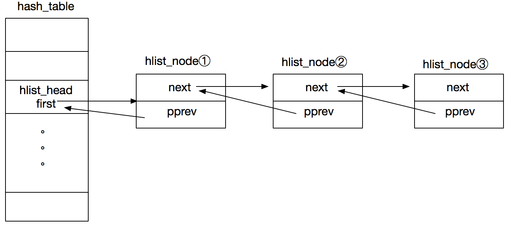

内核基础设施——hlist_head/hlist_node结构解析
Contents
注意：本文中的代码参考于linux v4.16。
数据结构
hlist_head和hlist_node用于散列表，分别表示列表头（数组中的一项）和列表头所在双向链表中的某项，两者结构如下:
struct hlist_head {
struct hlist_node *first;
};
struct hlist_node {
struct hlist_node *next, **pprev;
};
在内核中的普通双向链表基本上都是通过list_head实现的：
struct list_head {
struct list_head *next, *prev;
};
list_head很好理解，但是hlist_head和hlist_node为何要这样设计呢？
先看下hlist_head和hlist_node的示意图:

hash_table为散列表（数组），其中的元素类型为struct hlist_head。以hlist_head为链表头的链表，其中的节点hash值是相同的（也叫冲突）。first指针指向链表中的节点①，然后节点①的pprev指针指向hlist_head中的first，节点①的next指针指向节点②。以此类推。
hash_table的列表头仅存放一个指针,也就是first指针,指向的是对应链表的头结点,没有tail指针,也就是指向链表尾节点的指针,这样的考虑是为了节省空间——尤其在hash bucket(数组size)很大的情况下可以节省一半的指针空间。
为什么pprev是一个指向指针的指针呢？按照这个设计，我们如果想要得到尾节点，必须遍历整个链表，可如果是一个指向节点的指针，那么头结点现在的pprev便可以直接指向尾节点，也就是list_head的做法。
对于散列表来说，一般发生冲突的情况并不多（除非hash设计出现了问题），所以一个链表中的元素数量比较有限，遍历的劣势基本可以忽略。
在删除链表头结点的时候，pprev这个设计无需判断删除的节点是否为头结点。如果是普通双向链表的设计，那么删除头结点之后，hlist_head中的first指针需要指向新的头结点。通过下面2个函数来加深理解:
static inline void hlist_add_head(struct hlist_node *n, struct hlist_head *h)
{
struct hlist_node *first = h->first;
n->next = first; //新节点的next指针指向原头结点
if (first)
first->pprev = &n->next;//原头结点的pprev指向新节点的next字段
WRITE_ONCE(h->first, n);//first指针指向新的节点（更换了头结点）
n->pprev = &h->first;//此时n是链表的头结点,将它的pprev指向list_head的first字段
}
static inline void __hlist_del(struct hlist_node *n)
{
struct hlist_node *next = n->next;
struct hlist_node **pprev = n->pprev;
WRITE_ONCE(*pprev, next); // pprev指向的是前一个节点的next指针,当该节点是头节点时指向 hlist_head的first,两种情况下不论该节点是一般的节点还是头结点都可以通过这个操作删除掉所需删除的节点。
if (next)
next->pprev = pprev;//使删除节点的后一个节点的pprev指向删除节点的前一个节点的next字段，节点成功删除。
}
相关API
| API | 说明 |
|---|---|
| HLIST_HEAD_INIT | 静态初始化hlist_head |
| HLIST_HEAD | 静态初始化hlist_head |
| INIT_HLIST_HEAD | 动态初始化hlist_head |
| INIT_HLIST_NODE | 动态初始化hlist_node |
| hlist_unhashed | 判断hlist_node是否添加到hash链表中 |
| hlist_empty | 判断hash链表是否为空 |
| hlist_del | 在hash链表中删除一个节点 |
| hlist_del_init | 在hash链表中删除一个节点 |
| hlist_add_head | 在hash链表头添加一个节点 |
| hlist_add_before | 在指定节点之前添加一个节点 |
| hlist_add_behind | 在指定节点之后添加一个节点 |
| hlist_add_fake | |
| hlist_fake | |
| hlist_is_singular_node | 判断hlist是否只有一个节点 |
| hlist_move_list | 将一个hash链表从一个hlist_head移动到另外一个hlist_head中 |
| hlist_entry | 根据hlist_node找到其外层结构体 |
| hlist_entry_safe | 同上 |
| hlist_for_each | 遍历hash链表 |
| hlist_for_each_safe | 同上 |
| hlist_for_each_entry | 遍历hash链表 |
| hlist_for_each_entry_safe | 同上 |
| hlist_for_each_entry_continue | 从当前节点之后遍历hash链表 |
| hlist_for_each_entry_from | 从当前节点开始遍历hash链表 |
程序示例
写一个测试模块，验证一下各个API
模块代码
#include <linux/module.h>
#include <linux/kernel.h>
#include <linux/init.h>
#include <linux/list.h>
struct node {
int val;
struct hlist_node list;
};
static int __init hlist_test_init(void)
{
struct hlist_head head;
struct node a, b, c, d, e;
struct node *pos;
struct hlist_node *p;
printk(KERN_ALERT "[Hello] hlist_test \n");
INIT_HLIST_HEAD(&head); //初始化链表头
a.val = 1;
b.val = 2;
c.val = 3;
d.val = 4;
e.val = 5;
hlist_add_head(&a.list, &head); //添加节点
hlist_add_head(&b.list, &head);
hlist_add_head(&c.list, &head);
printk(KERN_ALERT "-------------------------------------- \n");
//遍历链表，打印结果 方法1
hlist_for_each_entry(pos, &head, list) {
printk(KERN_ALERT "node.val = %d\n", pos->val);
} // print 3 2 1
printk(KERN_ALERT "-------------------------------------- \n");
// 遍历链表，打印结果 方法2
hlist_for_each(p, &head) {
pos = hlist_entry(p, struct node, list);
printk(KERN_ALERT "node.val = %d\n", pos->val);
} // print 3 2 1
printk(KERN_ALERT "-------------------------------------- \n");
hlist_del_init(&b.list); // 删除中间节点
hlist_for_each_entry(pos, &head, list) {
printk(KERN_ALERT "node.val = %d\n", pos->val);
} // print 3 1
printk(KERN_ALERT "-------------------------------------- \n");
hlist_add_before(&d.list, &a.list); //在最后一个节点之前添加新节点
hlist_for_each_entry(pos, &head, list) {
printk(KERN_ALERT "node.val = %d\n", pos->val);
} // print 3 4 1
printk(KERN_ALERT "-------------------------------------- \n");
hlist_add_behind(&e.list, &a.list);//在最后一个节点之后添加新节点
hlist_for_each_entry(pos, &head, list) {
printk(KERN_ALERT "node.val = %d\n", pos->val);
} // print 3 4 1 5
return 0;
}
static void __exit hlist_test_exit(void)
{
printk(KERN_ALERT "[Goodbye] hlist_test\n");
}
module_init(hlist_test_init);
module_exit(hlist_test_exit);
MODULE_LICENSE("GPL");
执行结果
[ 944.056943] [Hello] hlist_test
[ 944.056947] --------------------------------------
[ 944.056948] node.val = 3
[ 944.056949] node.val = 2
[ 944.056950] node.val = 1
[ 944.056951] --------------------------------------
[ 944.056952] node.val = 3
[ 944.056953] node.val = 2
[ 944.056954] node.val = 1
[ 944.056955] --------------------------------------
[ 944.056956] node.val = 3
[ 944.056957] node.val = 1
[ 944.056958] --------------------------------------
[ 944.056959] node.val = 3
[ 944.056960] node.val = 4
[ 944.056961] node.val = 1
[ 944.056962] --------------------------------------
[ 944.056963] node.val = 3
[ 944.056964] node.val = 4
[ 944.056965] node.val = 1
[ 944.056965] node.val = 5
其他
内核中用hlist来实现 hash table，在内核上一般有如下的hash table：
# dmesg | grep "hash table entries"
[ 0.000000] PV qspinlock hash table entries: 256 (order: 0, 4096 bytes)
[ 0.000000] PID hash table entries: 4096 (order: 3, 32768 bytes)
[ 0.294869] Dentry cache hash table entries: 524288 (order: 10, 4194304 bytes)
[ 0.296328] Inode-cache hash table entries: 262144 (order: 9, 2097152 bytes)
[ 0.296589] Mount-cache hash table entries: 8192 (order: 4, 65536 bytes)
[ 0.296595] Mountpoint-cache hash table entries: 8192 (order: 4, 65536 bytes)
[ 0.614525] TCP established hash table entries: 32768 (order: 6, 262144 bytes)
[ 0.614769] TCP bind hash table entries: 32768 (order: 9, 2621440 bytes)
[ 0.616607] UDP hash table entries: 2048 (order: 6, 393216 bytes)
[ 0.616794] UDP-Lite hash table entries: 2048 (order: 6, 393216 bytes)
[ 1.053747] futex hash table entries: 1024 (order: 5, 131072 bytes)
[ 1.079062] Dquot-cache hash table entries: 512 (order 0, 4096 bytes)